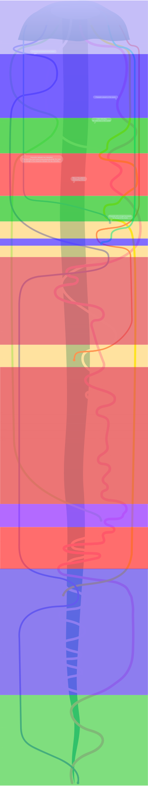

What we're talking about
"Seven Pounds" is a 2008 drama film that revolves around the main character, played by Will Smith, who plays
the role of Ben Thomas, a man with a dark secret that drives him to seek forgiveness through acts of
kindness and selflessness.
This platform is designed to offer a unique and detailed view of the temporal evolution of the importance of
key characters within the plot, taking advantage of a sophisticated line graph distinctively arranged within
a jellyfish.
Through an immersive visual experience, we invite you to explore the complexity of the relationships and
dynamics of the protagonists throughout the film. Each tentacle of the jellyfish represents a character. The
length and thickness of the line that accurately reflects the actor's role and importance at a particular
stage of the story.
Our goal is to offer a unique and in-depth perspective on the plot, allowing you to grasp the nuances of the
interactions between the protagonists and appreciate their individual growth over the course of the
narrative.
